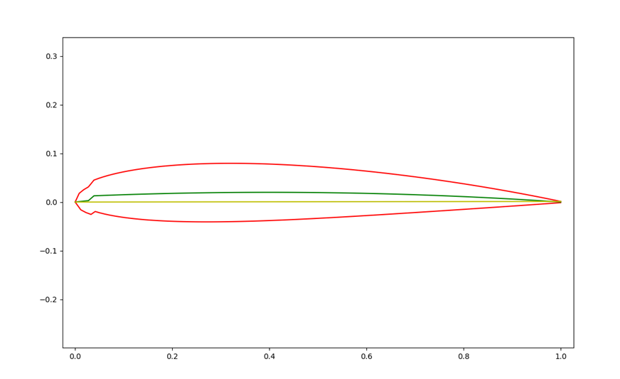

Il est aujourd’hui banal de voir de grands avions décoller et atterrir depuis tous les coins du monde. Mais ce que beaucoup de personnes ignorent c’est que le premier vol contrôlé d’un aéronef date de 1902. En un peu plus d’un siècle, on est passé d’un léger engin en bois et toile de 330kg qui ne volait qu’à quelques centimètres du sol à des avions de plusieurs centaines de tonnes, supersoniques ou encore des avions spatiaux. Mais pourquoi ce domaine s’est développé si rapidement ? C’est à la suite de la première guerre mondiale que l’aéronautique devient domaine de grand intérêt, en montrant les capacités de ce nouveau moyen de transport. Mais un grand problème survint rapidement : depuis ses débuts, le vol contrôlé n’était pas doublé par un cadre théorique sérieux, et les avions étaient construits à partir de tests presque aléatoires permettant d’implémenter des améliorations. C’est à partir de la fin des années 1920 que la mécanique de vol sera enfin soutenue par des outils mathématiques et physiques qui rendirent possible le développement d’avions plus grands, performants et résistants. Un des exemples d’application mathématique dans l’aéronautique est la méthode de Joukovski abordée dans l’article ci-joint :
L’évolution de l’aéronautique a toujours été portée par deux vecteurs très importants : la propulsion et l’aérodynamique. Le développement de nouveaux types de moteurs (turbopropulseurs, réacteurs, entre autres) est la face visible du rapide développement de l’aviation moderne, mais l’aérodynamique est l’aspect le plus important. En effet, le principe même d’un avion est de déformer l’écoulement d’air qui se trouve autour de ses ailes afin de créer une force verticale -la portance- permettant de soulever l’appareil. Les ailes n’ont pas des formes aléatoires, elles sont construites de façon à générer une différence de pression entre la partie supérieur -l’extrados- et la partie inférieure -l’intrados- générant cette force verticale. L’article ci-joint aborde le sujet avec plus de précision : Les premiers aviateurs construisaient donc leurs avions en appliquant grossièrement ce principe, ce qui générait des designs pas du tout optimisés, rendant les appareils très fragiles et sensibles aux vents (cela explique la grande quantité d’accidents survenus pendant les débuts). Mais dès la fin de la guerre, avec le développement d’avions plus grands et plus lourds destinés au transport civil, il fut nécessaire de développer des outils mathématiques permettant de calculer des profils d’ailes optimisés pour l’appareil souhaité. C’est à partir de ce moment que des catalogues de profils construits à partir d’algorithmes simples furent publiés vers la fin des années 1920.
Le NACA (National Advisory Comitee for Aeronautics) fut fondée en 1915 aux États-Unis avec l’objectif d’établir un groupe de chercheurs visant à développer des technologies de guerre liées à l’aviation. Créée en réponse des autres instituts européens chargés du développement de l’aviation et de ses applications militaires, cette organisation est responsable du développement des catalogues de profils aérodynamiques NACA, qui sont encore activement utilisés aujourd’hui par tous les constructeurs d’aéronefs au monde. Le premier catalogue date de la fin des années 1920 et réunit un total de 78 profils aérodynamiques construits à partir d’un algorithme et testés en conditions réelles dans la base de Langley en Virginie. Cette publication constitue tout un exploit car non seulement il s’agit d’une des premières bases de données utilisables par des constructeurs, mais elle permet de relier les caractéristiques géométriques des profils et leur comportement en vol. Depuis cette date, un total de neuf catalogues collectionnent un ensemble très complexe de profils optimisés pour une infinité d’avions différents, tous dérivant d’algorithmes de plus en plus complexes permettant cette grande diversité de formes.
Pour comprendre comment on peut construire un profil aérodynamique, il est nécessaire de définir dans un premier temps deux valeurs géométriques décrivant la forme générale d’un profil : la corde, et la cambrure. La corde est la distance séparant le bord d’attaque (le point où l’écoulement de l’air se sépare) et le bord de fuite (point où les deux écoulements de chaque côté du profil se réunissent). La cambrure est définie comme l’asymétrie entre la partie supérieure (souvent plus bombée) et la partie inférieure du profil (souvent plane), et elle est souvent représentée par la ligne de cambrure qui est la ligne moyenne des deux lignes du profil. C’est avec ces deux grandeurs qu’on est capable de construire un profil NACA à 4 chiffres. Les 4 chiffres du profil représentent 3 valeurs : le premier chiffre est la cambrure maximale du profil exprimée en pourcentage de corde. Le deuxième est la position de cette cambrure maximale exprimée en dizaine de pourcentage de corde. Enfin les deux dernières valeurs représentent l’épaisseur maximale du profil exprimée en pourcentage de corde. Ensuite on peu distinguer deux types de profils : les profils symétriques, qui par définition ont une cambrure nulle, et les profils quelconques. Si le profil est quelconque, la première étape de calcul consiste en la construction de la ligne de cambrure : soient m la cambrure maximale, p la position de la cambrure maximale, t l’épaisseur maximal du profil et c la corde maximale. Les deux segments de la ligne sont construits selon les formules : $$\begin{cases} yc=\frac{m}{p^2}\left(2px-x^2\right)\ pour\ 0\le x\le p \\ yc=\frac{m}{{(1-p)}^2}\left[\left(1-2p\right)+2px-x^2\right]\ pour\ p\le x\le c \end{cases}$$
Ensuite, on peut définir l’angle θ qui est défini par la formule : $$\theta=\arctan(\frac{dyc}{dx})$$
On définit maintenant la distance entre la ligne de cambrure et la courbe du profil suivant l’axe vertical en appliquant la formule suivante : $$\pm\ yt=\frac{t}{0,2}(0,2969\sqrt x-0,1260x-0,3516x^2+0,2843x^2-0,1015x^4)$$
Enfin on peut définir les coordonnées des points du profil en appliquant les formules suivantes :
Pour les profils symétriques, les deux premières étapes ne sont pas nécessaires car la ligne de cambrure et l’angle θ sont déjà connus, car dans un profil symétrique la ligne de cambrure est la corde.
Il est possible d’implémenter ce code sur Python et reconstruire des profils NACA 4 chiffres apparu dans le premier catalogue. Ce code permet de créer un profil composé de 200 points qui peut être implémenté sur un tableur Excel pour ensuite l’exporter vers un modèle 3D de type DSS Catia.
Profil symétrique NACA 0012, souvent utilisé pour des pâles d’hélicoptère
Profil asymétrique NACA 2412, souvent utilisé pour des petits avions (les tracés étranges sont dus à l’affichage par python des courbes).